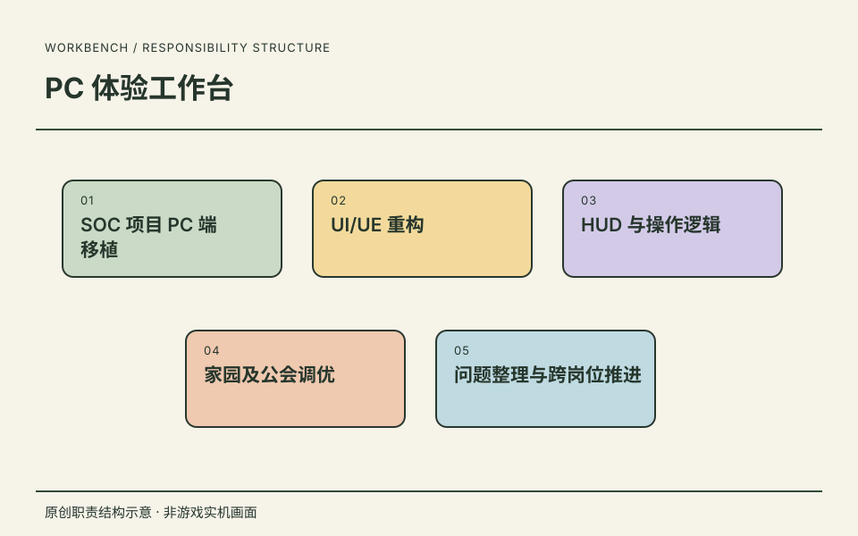
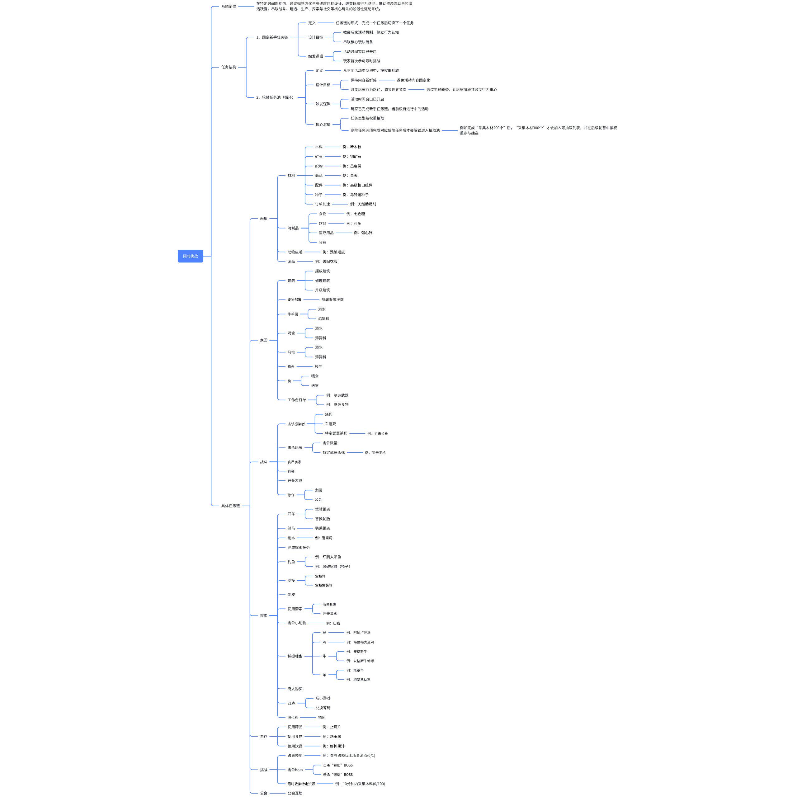
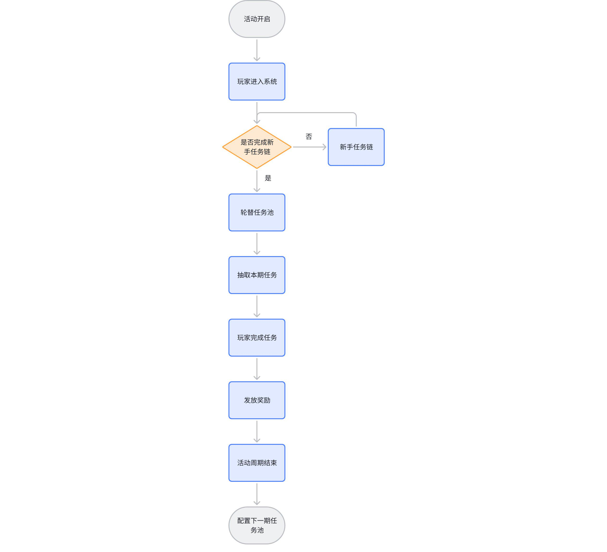
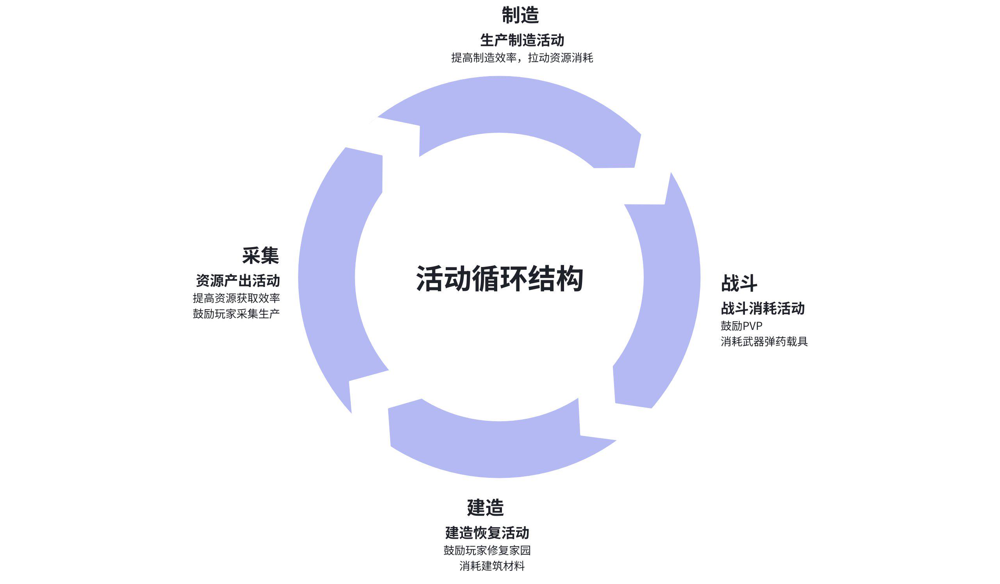
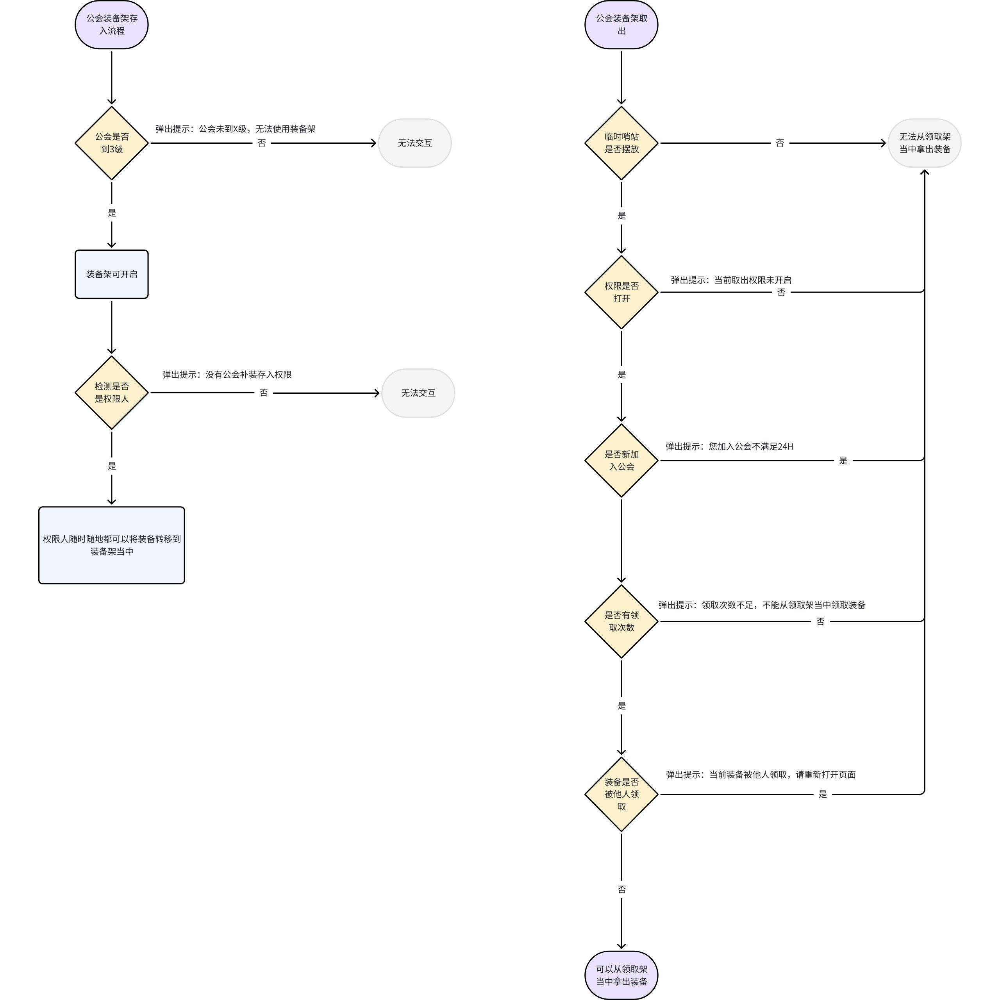
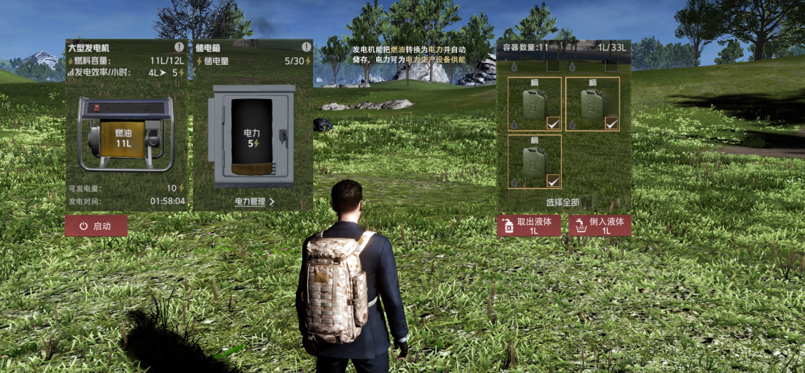
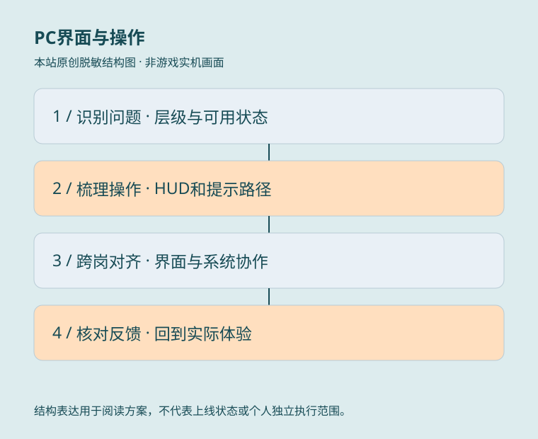

01
PC 移植中的交互重构
- 具体工作
- 承担 SOC 项目 PC 端移植、UI/UE 重构及 HUD 与操作逻辑调整。
- 工作价值
- 将界面信息、操作提示与系统入口一起考虑，体现跨端体验设计能力，而非单纯调整画面尺寸。
PC 交互职责摘要 ↗02
将局部问题转为通用规范
- 具体工作
- 创建和修订系统数值显示规范，区分中英文单位、精确数字与紧凑物品格缩写，并列出 QA 检查点。
- 工作价值
- 把显示一致性、量级辨识与布局约束整理为可复用交付规则；以更新表记录支持个人产出，而非用团队截图代替作者依据。
本人记录与规范摘要 ↗03
系统调优与跨岗位推进
- 具体工作
- 开展家园、公会系统调优，整理体验问题并推进跨岗位调整。
- 工作价值
- 把体验问题转为具体协作事项，让系统设计与研发推进相互衔接。
项目工作记录 ↗
职责依据本人履历与确认；原图补充设计证据，经营结果另行说明来源与口径。

原创职责结构示意 · 非游戏实机画面ROLE / 我的角色高级系统策划
围绕 SOC 项目 PC 移植重构界面与操作体验，创建数值显示规范，并结合家园、公会调优推进跨岗位调整；在约 10 人系统组中协作交付。
SCOPE / 工作范围工作职责
- 01SOC 项目 PC 端移植
- 02UI/UE 重构
- 03HUD 与操作逻辑
- 04家园及公会调优
- 05问题整理与跨岗位推进
RECORD / 可追溯记录任职记录
围绕 SOC 项目 PC 移植重构界面与操作体验，创建数值显示规范，并结合家园、公会调优推进跨岗位调整；在约 10 人系统组中协作交付。
- 任职公司
- 英雄游戏科技股份有限公司
- 角色
- 高级系统策划
- 时间
- 2025.07—2026.07.23
任职、角色与职责依据本人履历及确认。图示是本站原创的职责结构表达。
DESIGN JOURNAL / 方案摘要
项目方案.
读背景、职责、方案与可证实产出。
个人贡献以正文更新表和已确认职责为依据，团队文档与界面资源分别标注。活动日志日期早于已确认任期，具体完成时间待核对，不据此修改任职事实。历史方案不代表全部已上线，设计目标不等同于经营成果。
本人创建与修订记录
把局部显示问题整理为通用数值规范
设计问题
公会升级、仓库与背包格子混用完整数字和缩写，怎样避免量级误读，又让多语言布局稳定？
产出与贡献依据
《游戏内系统数值显示统一规范文档》更新表记录吴天昊创建与修订（2025.12）。产出包括问题分类、中英文显示规则、按界面空间区分的通用模板及 QA 检查点。
关键方案与工作价值
- 按语言分别约定英文 K / M / B 与中文“万”的表达，补充小数和末尾零的处理。
- 全屏或弹窗有足够空间时展示精确数字；紧凑物品格采用缩写，避免数字长度挤压布局。
- 将同一界面内的容量、持有量和消耗量放在一致的语义规则下检查，覆盖资源判断与容量辨识。
- 价值在于把单个界面问题转为可复用、可交接的系统级规则；尚无最终上线或误读减少幅度的验证。
本人创建记录 · 时间待核对
以新手链与轮替池组织持续挑战
设计问题
如何让第一次参与容易理解，同时让重复参与仍有变化，而不重新制作一套核心玩法？
产出与贡献依据
《限时挑战》更新表记录吴天昊创建、补齐文档及任务池链接。日志日期早于已确认任期，具体完成时间待核对；这里只呈现文档记载的方案产出，不改写年份。
关键方案与工作价值
- 采用固定新手任务链建立活动认知，再进入轮替任务池；前置完成后，高阶任务才进入可抽范围。
- 按服务端行为事件匹配任务、更新计数，并区分进行中、完成未领取与已领取状态。
- 区分首次发现、新任务与可领奖提醒，定义入口、页签、条目的红点及清除规则。
- 补充活动关闭、断线重连、下期配置生效与重启恢复，并列出曝光、参与、完成和领奖的分析需求；这些是设计要求而非实测结果。

《【活动】限时挑战》三、思维导图 · 原始历史资料查看原图（可缩放） ↗在页面内阅读大图

《【活动】限时挑战》四、系统流程 · 原始历史资料查看原图（可缩放） ↗在页面内阅读大图
本人创建与修订记录 · 时间待核对
用世界规则变化串联资源循环
设计问题
怎样让采集、制造、战斗与建造轮流成为短期目标，而不是仅增加一层额外奖励？
产出与贡献依据
《特殊节日设计》的两个版本均记录吴天昊创建，扩展版还记录调整导图和补充活动循环。日志日期早于已确认任期，完成时间待核对；采用扩展版图示，避免重复展示。
关键方案与工作价值
- 以限定时间和区域的规则变化引导行为，区分采集产出、制造、战斗消耗与建造恢复。
- 通过活动入口、地图热点和广播连接发现、理解规则、前往区域的体验路径。
- 明确未开启、进行中与结束的界面状态，首次查看后清除提醒；考虑跨区域规则与重启后的恢复。
- 建立曝光到参与的分析路径；区域活跃、资源流动和参与提升在原文中是目标，不作为已达成业绩。

《【活动】特殊节日设计 (1)》四、活动循环结构 · 原始历史资料查看原图（可缩放） ↗在页面内阅读大图
团队项目背景 · 不认定本人独立作者
公会资源流转中的权限与异常分支
设计问题
多人共享物资时，怎样处理使用权限、物品被他人领取和资源流转中的数据一致性？
产出与贡献依据
《公会装备架优化 (1)》和《公会悬赏系统》更新表均署名其他成员。本人已确认公会系统调优职责，但不能从岗位范围推定这些文档全部由本人设计；本组作为项目需求背景。
关键方案与工作价值
- 装备架区分激活、调度与提取权限；领取流程处理未解锁、未授权、加入条件和次数不足。
- 物品已被其他成员领取时给出刷新提示，避免仍按旧界面状态执行。
- 征集方案涉及兑换选择、库存不足、物品状态保留、发布失败与过期通知，体现跨系统交互的边界问题。
- 保留历史原始流程图；图上的示例条件不是当前配置，也不是本人独立成果或最终上线证明。

《【优化】公会装备架优化 (1)》四、系统流程，其他成员署名文档 · 原始历史资料查看原图（可缩放） ↗在页面内阅读大图
未署名项目需求 · 团队界面资源
从 HUD 遮挡到可操作状态的界面调整
设计问题
进入家园发电界面后，如何突出当前任务，并避免可点击按钮看起来不可用？
产出与贡献依据
《家园发电机》包含现状和新版效果图，但未发现正文作者或修订署名。选用无调试信息的新版需求图，说明交互问题与预期表现，不宣称本人独立方案或最终实现。
关键方案与工作价值
- 进入操作界面时隐藏无关 HUD，处理任务按钮与图标重叠，聚焦发电机操作。
- 将启动、取出和倒入按钮的可操作常态与置灰不可用态区分，沿用同类界面的状态表达。
- 用燃油、储电、容器选择及操作说明连接资源判断和行动反馈。
- 图为历史需求效果，不是改造后验收截图；美术和程序实现归团队相应岗位。

《【优化】家园发电机》三、UI界面调整，新版效果图，文档未署名 · 原始历史资料查看原图（可缩放） ↗在页面内阅读大图
其他成员署名方案 · 项目背景
批量操作与跨区域通知的反馈设计
设计问题
耗时操作能否离开面板继续执行？进入副本后，通知与跳转应该如何保持有效？
产出与贡献依据
《分解机优化》《消息聚合功能优化》的创建记录署名其他成员。本组提取规则和交互问题作为项目背景，排除含调试信息的截图、配置字段和未确认实施结论。
关键方案与工作价值
- 分解方案筛选可操作道具，减少数量确认步骤，并定义一键放入的满格、无道具和待领取状态提示。
- 将面板关闭与分解执行区分，完成后通过通知反馈；同图标物品区分方案仍标注为待讨论。
- 消息聚合在副本或跨区域情况下讨论限制查看、屏蔽跳转与延后推送等备选路径，不能混写为一套已实施规则。
- 这些资料展示边界条件与状态反馈问题；具体采用哪种方案、本人参与环节及最终效果尚未逐项确认。
交付结构：规则之外还需要说明什么
三个《文档规范模版（流程1）》版本保留了占位署名，不能认定为本人创建的规范。这里仅摘录其团队交付结构，作为理解上述方案的参考。
- 从设计目的、模块关系与系统流程，进入具体界面、条件和异常分支。
- 将配置、红点、行为记录、跨系统依赖、跨区域与 PC 交互差异一起纳入说明。
- 补充服务器重启后的恢复、暂停或清理规则，最后关联美术音效需求与文档版本。
筛选说明：排行榜文档关键设计章节尚未展开，不作为完整系统案例；装备架空白版本不重复展示。排除第三方游戏临时参考、带身份水印或调试信息的截图、完整内部原件和敏感经济配置。

PC界面与操作 · 本站原创脱敏结构图PROJECT / 工作说明PC界面与操作
项目背景
PC移植需要重新梳理界面层级、HUD操作提示与系统交互，同时确保资源数字在不同界面中表达一致。
本人职责
承担已确认的PC移植、UI/UE、HUD操作和家园公会调优职责；数值规范更新表记录本人创建及修订，其他成员或未署名方案不认定为本人独立成果。
关键方案
将局部显示问题转为中英文单位、精确与紧凑场景的通用规则，并结合界面状态和跨岗位问题推进。精选资料另呈现活动结构、权限流程及反馈边界。
可证实产出
个人产出包含数值显示规范及QA检查点；活动文档有本人创建记录但日志日期待核对。其余团队方案补充项目背景，不新增最终上线、独立实现或量化经营效果主张。
摘要依据：已确认履历及《游戏内系统数值显示统一规范文档》更新表；精选活动与系统文档分别标注归属。本站原创职责结构图与原始历史资料分别标注；原件、配置、身份水印与调试截图不公开。
放大流程图 ↗阅读文档摘要 ↗ 在页面内阅读流程图＋
可滚动阅读大图；也可打开流程图缩放。下方文字提供同等内容。